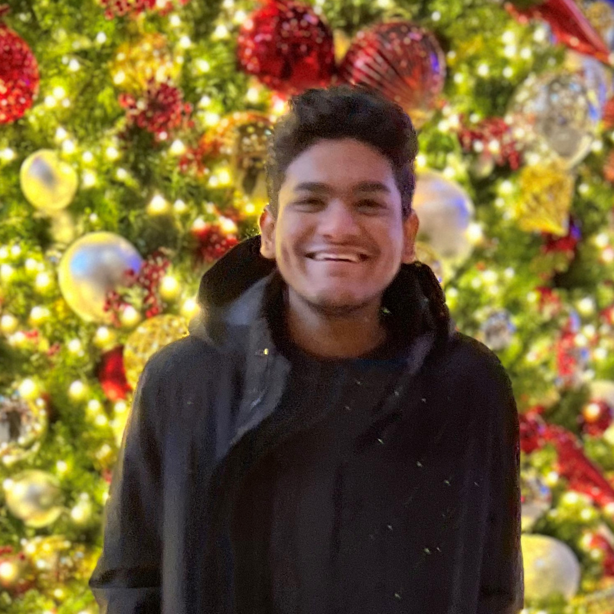

Committee Members

ABOUT ME
Hello, I'm Jeremiah Milbauer. I grew up New York City, developing an early fondness for the big NYC specialties: art galleries, subways, bagels, pizza, crossword puzzles, and rats. Then I moved to the Windy City, where I studied computer science, philosophy, and linguistics at the University of Chicago. Currently, as an MLT student in the Language Technologies Institute, I do work to make knowledge representation more efficient and generalizable — in order to render AI more useful, in more ways, to more people.
Outside of work I enjoy playing music, telling stories, and — global health permitting — going out (and sometimes dancing) to jazz. PROJECTS
Outside of work I enjoy playing music, telling stories, and — global health permitting — going out (and sometimes dancing) to jazz. PROJECTS
- Welcome Package
- SCS Master's Ball
Jeremiah Milbauer
LTI MLT | Liason for the Dean
ABOUT ME
Hey there! My name is Marta Méndez, I was born and raised in Santander, Spain. I am currently a graduate student in MS in Artificial Intelligence and Innovation (MSAII) program at LTI (class of 2022). I studied Telecommunications Engineering in University of Cantabria (Spain), and for the past four years I was working in the satellite communications industry, providing internet connectivity to yachts, cruises, and commercial vessels.
I decided to switch paths from networking to AI because of its potential to improve society for the better and its broad applicability. I am particularly interested in AI applications for social good that target regular people, like you and I. I am currently conducting research under Dr Kraut (professor emeritus of HCI) on Instagram and mental health. Academics apart, I love travelling, watching TV shows, and walking my dog (who I miss so very much because he’s in Spain). Feel free to reach out to me on LinkedIn, or schedule a quick chat directly from our website :) I would love to get to know you! PROJECTS
I decided to switch paths from networking to AI because of its potential to improve society for the better and its broad applicability. I am particularly interested in AI applications for social good that target regular people, like you and I. I am currently conducting research under Dr Kraut (professor emeritus of HCI) on Instagram and mental health. Academics apart, I love travelling, watching TV shows, and walking my dog (who I miss so very much because he’s in Spain). Feel free to reach out to me on LinkedIn, or schedule a quick chat directly from our website :) I would love to get to know you! PROJECTS
- Welcome Package (Lead)
- SCS House Scoring System
- SCS Master's Ball
Marta Mendez
LTI MSAII | Secretary
ABOUT ME
Hey there! I am Stuti and I am pursuing a Masters in Computer Science (graduating May 2022). I grew up in Dubai and moved to the US in 2013. I did my Bachelor's in Computer Science and Mathematics and worked as a Software Engineer in Seattle until moving to Pittsburgh.
At CMU, I am currently conducting research in networking and am interested in solving systems problems for ML. During the weekend, you can find me exploring the city with my dog, trying out new food in the area, and reading historical books. I am also passionate about promoting STEM education, especially to diverse groups, and enjoy working on initiatives for it.
Please do feel free to add me on LinkedIn, schedule some time with me, or drop me an email. I would love to chat and help out! PROJECTS
At CMU, I am currently conducting research in networking and am interested in solving systems problems for ML. During the weekend, you can find me exploring the city with my dog, trying out new food in the area, and reading historical books. I am also passionate about promoting STEM education, especially to diverse groups, and enjoy working on initiatives for it.
Please do feel free to add me on LinkedIn, schedule some time with me, or drop me an email. I would love to chat and help out! PROJECTS
- Welcome Package
- SCS Buddy Program
- SCS House Scoring System
Stuti Misra
CSD MSCS | Treasurer
ABOUT ME
Hey! I'm Ani, I grew up in Singapore, just completed my undergraduate degree in Computer Science at CMU, and am currently in the MS Machine Learning program. I love teaching and have been a TA for Theoretical CS and Algorithms classes, and spend time thinking about how we can make these ideas accessible to anyone interested in Computer Science. I also work on research in Cryptography, Privacy, Game Theory, Machine Learning and the many interesting applicable problems at their intersections.
Outside the world of Computer Science, I enjoy reading history, poker, and playing and following sports, cricket, racing and soccer in particular. Feel free to reach out on Linkedin - https://www.linkedin.com/in/anirudh-baddepudi-699214144/ - or schedule a chat through our website! PROJECTS
Outside the world of Computer Science, I enjoy reading history, poker, and playing and following sports, cricket, racing and soccer in particular. Feel free to reach out on Linkedin - https://www.linkedin.com/in/anirudh-baddepudi-699214144/ - or schedule a chat through our website! PROJECTS
- SCS Buddy Program
- Welcome Package
Anirudh Baddepudi Sai
MLD Fifth Year Masters in Machine Learning
ABOUT ME
Hi, I’m Keshav and I’m from Saratoga, California. I’m a 5th year Masters in Machine Learning student graduating in May 2022. I previously did my undergrad at CMU, where I majored in Computer Science and minored in Math and Machine Learning. Feel free to connect with me at https://www.linkedin.com/in/keshav-narayan-181763148/
PROJECTS
- SCS Master's Ball (Lead)
Keshav Narayan
MLD Fifth Year Masters in Machine Learning
ABOUT ME
Hi! My name is Lena and I’m from St. Lucia, a small island in the Caribbean. I’m currently in the Master of Software Engineering program at CMU and previously studied Computer Science at the Illinois Institute of Technology. I have a special interest in cloud computing and enjoy hosting the AWS Meetup in my city, a community group dedicated to learning about cloud technologies. In my spare time, I like listening to podcasts, playing the piano and creating art.
PROJECTS
- Welcome Package
Lena Taupier
ISR MSE
ABOUT ME
Hello! I am Mansi Goyal. I am currently pursuing an MS in Artificial Intelligence and Innovation (MSAII) program in LTI (class of 2021). I received my undergraduate degree in Computer Science at Manipal Institute of Technology, India. I then worked as a Software Development Engineer at Western Digital for two years. My projects there ranged from writing C++ modules for their validation framework to contributing to a DL model for test case prioritization. Feel free to connect with me on LinkedIn at: https://www.linkedin.com/in/goyal-mansi/
I moved to Pittsburgh from Rajasthan, India in the middle of a pandemic. Starting grad school remotely was a risky but rewarding decision. When I am not doing my assignments, I like to read and listen to music. I spend way too much time curating playlists on Spotify. I love volunteering and mentoring students! I also have vast experience in leading projects and diversity initiatives which include my own YouTube channel (https://medium.com/the-one-in-asankhya-project/about) that focuses on bringing successful people from different careers to share their journeys and struggles. PROJECTS
I moved to Pittsburgh from Rajasthan, India in the middle of a pandemic. Starting grad school remotely was a risky but rewarding decision. When I am not doing my assignments, I like to read and listen to music. I spend way too much time curating playlists on Spotify. I love volunteering and mentoring students! I also have vast experience in leading projects and diversity initiatives which include my own YouTube channel (https://medium.com/the-one-in-asankhya-project/about) that focuses on bringing successful people from different careers to share their journeys and struggles. PROJECTS
- Great Big Meeting
Mansi Goyal
LTI MSAII
ABOUT ME
Hello all, my name is Parnal Sinha! I was born in Mumbai, India and my family currently resides in Houston, Texas. I earned my BS in Bioengineering: Biotechnology from the University of California, San Diego and graduated in June 2020 (straight into the pandemic). However, I was fortunate to find a position as a Research Assistant and then an Operations Technician at a startup medical device diagnostics company called Brevitest. Here, I was working in developing medical devices which perform traditional quantitative ELISAs for biomedical assays through an automated fashion. Specifically, our goal was to assist in curbing the COVID-19 health crisis by providing an efficient antibody test. My academic and research interests lie in computational modeling of proteomics & transcriptomics for systems-based analyses of cellular networks and regulatory pathways. Please feel free to contact me at: https://www.linkedin.com/in/parnal-sinha/ and/or ppsinha@andrew.cmu.edu!
I have a wide variety of interests due to my transient lifestyle during childhood. In fact, I moved constantly between South Korea, Malaysia, Dubai, and India over 5 years of my early childhood! Thereafter, my parents moved to Canada when I was 7 and left for Texas at 13 during my high school years and then finished my undergraduate program in California! I love to play soccer and have supported Arsenal for 16 years (pain). Furthermore, I have been focused on exercising and training over the past 3-4 years! I’m always willing to have different experiences such as hiking across mountainous trails, exploring attractions, dining at fusion cuisines and the occasional board game /movie night is always a blast! My music taste is very fluid (R&B, EDM, Pop, Soul, Alt, Lo-Fi, etc.); ironically not a big fan of country music. In terms of TV shows: I watch anything and everything, but I don’t have a good track record of finishing shows (Netflix, Hulu, Anime, etc.) Basically, I’m pretty easy to start a conversation with so I look forward to hearing from you soon! :) PROJECTS
I have a wide variety of interests due to my transient lifestyle during childhood. In fact, I moved constantly between South Korea, Malaysia, Dubai, and India over 5 years of my early childhood! Thereafter, my parents moved to Canada when I was 7 and left for Texas at 13 during my high school years and then finished my undergraduate program in California! I love to play soccer and have supported Arsenal for 16 years (pain). Furthermore, I have been focused on exercising and training over the past 3-4 years! I’m always willing to have different experiences such as hiking across mountainous trails, exploring attractions, dining at fusion cuisines and the occasional board game /movie night is always a blast! My music taste is very fluid (R&B, EDM, Pop, Soul, Alt, Lo-Fi, etc.); ironically not a big fan of country music. In terms of TV shows: I watch anything and everything, but I don’t have a good track record of finishing shows (Netflix, Hulu, Anime, etc.) Basically, I’m pretty easy to start a conversation with so I look forward to hearing from you soon! :) PROJECTS
- SCS Buddy Program (Lead)
- SCS House Scoring System (Lead)
- Welcome Package
Parnal Sinha
CB MSCB
ABOUT ME
Hi this is Sreenidhi Sundaram! I am an international student from India. I am currently a graduate student here at CMU enrolled in the MSAII program in LTI, SCS (Class of 2022). I have a Bachelor's in Computer Science Engineering from PES University, India and a specialization in Data Science. Thereafter I worked as a Software Engineer at NASDAQ Inc. for two years. I am Interested in exploring the vast potential of Artificial Intelligence and Machine Learning in solving real world problems of great importance to research frontiers and socio-economic well being. In my free time I like to travel and explore new places. I also enjoy cooking and experimenting with new dishes. Feel free to reach out to me on LinkedIn or schedule some time to chat with me via email! :)
PROJECTS
- Welcome Package
- SCS Master's Ball
- SCS House Scoring System
Sreenidhi Sundaram
LTI MSAII
ABOUT ME
Hi, I am Aditi Awasthy! I am a graduate student at CMU in MS in Product Management program (graduating in December'22). Born and brought up in Delhi, India, I pursued engineering and business management education prior to MSPM. I have a special interest in AIML products and a newfound affinity for design. In my free time, I love to cook and read. Fell free to connect with me on LinkedIn.
Aditi Awasthy
TSB & HCII MSPM

ABOUT ME
Hi! A part of the MS in Artificial Intelligence and Innovation class of '23, I am super interested in entrepreneurship and AI. I am also on the senior board of the Graduate Entrepreneurship Club at Carnegie Mellon, my plans are to improve the SCS and CMU's entrepreneurship ecosystem. Feel free to connect with me on LinkedIn.
Outside work, I love to have discussions on philosophy, political science, economics, history, geopolitical phenomenon and the future of humanity.
Akshaj Jain
LTI MSAII
ABOUT ME
Hi I'm Christophe Haddad! I am currently a MS in Computer Science student (graduating Dec 2022). I grew up in Lebanon, where I did my Bachelor's in Computer and Communications Engineering at the American University of Beirut. During my undergrad, I spent a summer semester at Stanford University, and a fall one at Ecole Polytechnique (France). I'm interested in knowledge representation and reasoning, logic, and psychology - at CMU, I'd like to contribute in making chatbots more useful and human friendly.
Outside of work, I play piano (love to share the passion with friends), video games, love hiking, and enjoy fantasy/sci-fi movies.
Christophe Haddad
CSD MSCS
ABOUT ME
Hi there! I'm Harkiran (she/her) and I grew up in Southern California. I recently graduated from the University of Washington in Seattle, where I studied informatics with a human-computer interaction focus.
At CMU, I am currently pursuing my Master's in Human-Computer Interaction. My research interests lie in the learning sciences and participatory design, and my intended goals are to use HCI and technology to improve children's education.
In my free time, I enjoy watching sports, listening to music, reading, and spending time with friends. Feel free to connect with me on LinkedIn!
Harkiran Saluja
HCII MHCI
ABOUT ME
Mashrin is currently pursuing a Master of Science in Machine Learning at Carnegie Mellon University (CMU). He is also working as a research assistant with the Delphi group at CMU. His focus of research is on COVID-19 trends and impact, where he works with Facebook to monitor the spread and impact of the COVID-19 pandemic and vaccination.
Prior to joining CMU, Mashrin worked as a Deep Learning Engineer for over 3.5 years, in a highly selective innovation group at Intel, which works on the R&D of new product verticals at Intel. Mashrin was the core and founding team member of the AI/ML platform for the Health AI product vertical and also built smart city and mobility products, which got adopted on a population scale.
Mashrin was awarded the Technologist of the year award at Intel for the year 2020 and he was part of the team which won the Project of the year award and the most innovative project award at Intel India. Mashrin has 10+ invention disclosures and multiple papers during my time at Intel and he received 25+ recognition awards during his time at Intel. Mashrin is passionate about using technology for good and has worked on several projects for the same. Feel free to connect with me on LinkedIn or drop an email, if I can help you in any way!
Mashrin Srivastava
MLD MSML
ABOUT ME
I’m from Savannah Georgia and completed a B.S. in Biomedical Engineering with minors in Computer Science and Industrial Design at Georgia Tech in my undergrad. Now, at CMU, I’m pursuing a Master’s in Computer Science with a focus on the intersection of healthcare and data science. Outside classes I enjoy: cooking, climbing, running, and the Bloomfield farmer’s market.
Feel free to connect with me on LinkedIn or reach out via email to schedule some time to chat.
Nathan Luskey
CSD MSCS
ABOUT ME
Hey! I am Pranav, a Masters student in the Machine Learning Department. I lived in India until I came to CMU in the fall of 2021. Now in Pittsburgh, I run, explore restaurants, and listen to music (trying to learn to play the guitar too). I get super excited about Chess, Tennis and Coffee. A long time ago, in a galaxy far far away, I used to be an avid reader of books. Hopefully someday I will re-boot on that front. Currently at CMU, I am working on problems in distribution shift in Machine Learning at the ACMI Lab. I am always looking forward to the summer here! Happy to chat anytime about anything. Reach out to me on LinkedIn.
Pranav Mani
MLD MSMLAlumni

ABOUT ME
Hi! I’m Kiran Prasad and I was born in Buffalo, NY. I’m currently studying AI in the MS in Artificial Intelligence and Innovation (MSAII) program in LT (class of 2021)I. I have particular interest in adversarial robustness, representations, and applications of AI to business problems. I did my undergrad at the University of Michigan where I studied Chemical Engineering and Computer Science (go blue!). If you’re interested in my professional profile please check out: www.linkedin.com/in/kpprasa
I thoroughly enjoy learning about different fields having interest in physics, math, entrepreneurship, and philosophy (I’m way too into philosophy xD). To balance out all of that intellectual stuff, I really enjoy doing things outdoors (camping, biking, backpacking, swimming) and traveling (24 countries), yoga and meditation, and exploring (restaurants, bars, parks, cities, etc). Look forward to hearing from you!
I thoroughly enjoy learning about different fields having interest in physics, math, entrepreneurship, and philosophy (I’m way too into philosophy xD). To balance out all of that intellectual stuff, I really enjoy doing things outdoors (camping, biking, backpacking, swimming) and traveling (24 countries), yoga and meditation, and exploring (restaurants, bars, parks, cities, etc). Look forward to hearing from you!

ABOUT ME
Greetings! I’m Lijun Yu, an international student from China. I’m a second-year Master in Language Technologies (MLT) and an incoming PhD student at LTI. I have broad research interest in computer vision, video analytics, and multimodal action detection. I graduated summa cum laude from Peking University, China, with double bachelor’s degrees in computer science and economics. You can learn more about me at https://me.lj-y.com.
I love building things, especially electronic ones, from a smart home system, a personal computer, to a large cluster. I would hope that I could rebuild the empire of computer science even if the world were nuked. I used to travel much even in semesters, and I hope to resume as soon as the pandemic is over.
I love building things, especially electronic ones, from a smart home system, a personal computer, to a large cluster. I would hope that I could rebuild the empire of computer science even if the world were nuked. I used to travel much even in semesters, and I hope to resume as soon as the pandemic is over.

ABOUT ME
Danny is a 2nd year MSR student in the robotics institute working under the supervision of Professor Howie Choset. Danny also did his undergrad at CMU, studying MechE with an additional major in Robotics. Danny’s research is on the design and analysis of compliant control methods for space manipulators.
In his free time, Danny likes to wait in line outside the CMU gym, go for runs, and push for the SDC buggy team.
In his free time, Danny likes to wait in line outside the CMU gym, go for runs, and push for the SDC buggy team.

ABOUT ME
Hi! I am Romel Baral. I am a masters student in MSCB (Master of Science in Computational Biology) program; I expect to graduate in May, 2021. I was born in Kolkata, India. After finishing my bachelor’s degree in Mathematics and Computing, I worked for Goldman Sachs for four years in algorithmic trading before joining CMU. My academic interests lie in application of Machine Learning in biological and financial data. Feel free to connect with me on Linkedin at https://www.linkedin.com/in/romelbaral/
I love to cook, travel and banter about politics, mythology, religion etc. I cook almost every day, mainly traditional dishes found in Indian subcontinent. I have special interest in peasant food across the world and I try to replicate them as closely as I am able to. I love to hike and love going on day trips. When I have time, I usually pick a hiking trail and walk for hours. I used to travel a lot while working, hopefully I regain that enthusiasm after my CMU years. I also love watching anime and tv shows (especially USA and british ones). Being a homosexual person, I felt the need of LGBTQ wellfare in India. I used to be quite involved in LGBTQ activism, and even took part in the Supreme Court case that amended colonial section 377 in favor of LGBTQ people. Looking forward to hearing from you!
I love to cook, travel and banter about politics, mythology, religion etc. I cook almost every day, mainly traditional dishes found in Indian subcontinent. I have special interest in peasant food across the world and I try to replicate them as closely as I am able to. I love to hike and love going on day trips. When I have time, I usually pick a hiking trail and walk for hours. I used to travel a lot while working, hopefully I regain that enthusiasm after my CMU years. I also love watching anime and tv shows (especially USA and british ones). Being a homosexual person, I felt the need of LGBTQ wellfare in India. I used to be quite involved in LGBTQ activism, and even took part in the Supreme Court case that amended colonial section 377 in favor of LGBTQ people. Looking forward to hearing from you!

ABOUT ME
Hi, I'm Noelle! I'm currently a second year Master's student at Carnegie Mellon University in their Automated Science program. I also went to Carnegie Mellon for my undergraduate degree, which was in Neuroscience. I was born in the Bay Area in California. I'm interested in the combination of machine learning methods and automation in a scientific laboratory to make experiments more efficient.
In my free time, I hang out with friends, play video games, and get lost on Google Maps imagining where I could travel once things return to normal. I also love cooking, and frequently browse several recipe sites for dinner ideas.
In my free time, I hang out with friends, play video games, and get lost on Google Maps imagining where I could travel once things return to normal. I also love cooking, and frequently browse several recipe sites for dinner ideas.


David Bayani

Connie Chau

Sayan Chaudhry

Anant Kaushik

Neil Xu

ABOUT ME
Hey, I’m Evan Feder and I hail from Westport, CT. I’m in the Masters in Machine Learning program, graduating December 2021. I was previously an undergrad here at CMU, majoring in Information Systems + Statistics and Machine Learning. Throughout my time here at CMU I’ve done a few fun things, including TAed classes for the IS and ML departments, held multiple executive positions in Student Government, sat on too many university committees, served on the board of the CMU Business Technology Group, changed major plans twice, judged a chili cook-off, and threw the first pitch at a Pittsburgh Pirates game.
In my ample spare time I play the drums, jam out unironically to mid-2000s pop music, stare at my computer screen wondering why my code doesn’t work, rock climb, reminisce about when I used to actually remember my black belt-level kung fu, overanalyze the latest Christopher Nolan film, and annoy my friends with spontaneous pop culture references. Feel free to connect with me at https://www.linkedin.com/in/evanfeder/.
In my ample spare time I play the drums, jam out unironically to mid-2000s pop music, stare at my computer screen wondering why my code doesn’t work, rock climb, reminisce about when I used to actually remember my black belt-level kung fu, overanalyze the latest Christopher Nolan film, and annoy my friends with spontaneous pop culture references. Feel free to connect with me at https://www.linkedin.com/in/evanfeder/.

ABOUT ME
Hi this is Xinyu. I am an international student from China. I received my bachelor’s degree in Elementary and Special Education at University of Wisconsin - Madison and I am currently a first-year master’s student in METALS (Educational technology and applied learning science) at HCII. I am interested in instructional design and UX design and research, and I am passionate about exploring possible solutions for better educational outcomes.
I personally love doing sports and building Legos. I have a Lego collection at my apartment and I always bring them with me when I move. Usually I would like to go hiking with my friend during the weekends, and I have been to more than 10 trails in Pittsburgh.
I personally love doing sports and building Legos. I have a Lego collection at my apartment and I always bring them with me when I move. Usually I would like to go hiking with my friend during the weekends, and I have been to more than 10 trails in Pittsburgh.

ABOUT ME
Hi, my name is Indra and I’m from Indonesia. I’m currently enrolled in MS in Product Management (MSPM) program, a joint program between SCS and Tepper. I completed my bachelor’s degree in information systems at Binus University in Indonesia. Prior to CMU, I worked as a software engineer, business analyst, and project manager in various companies. In my free time, I enjoy traveling and going outdoors for hiking or camping. Feel free to schedule a quick chat with me or reach me on LinkedIn (https://www.linkedin.com/in/indratjhai/)